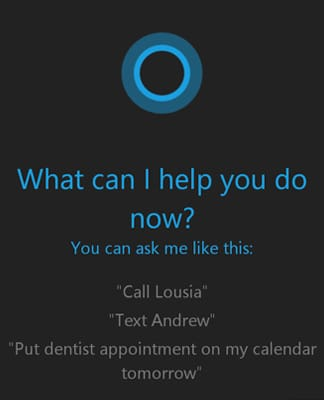
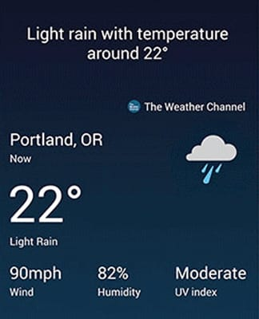
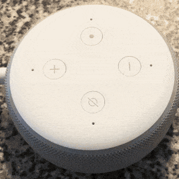

This paper documents Assistants with Attitude, a research project made in direct response to recent discussions regarding the propagation of gender stereotypes by female-voiced digital personal assistants and initiatives to create a feminist Alexa. In this paper, I discuss the use of Critical Making, the use of Agency in a digital assistant, and related projects by other practitioners. I describe the physical artefact that was created to expand upon topics in this paper and then explore a theoretical explanation for the predominance of female voiced conversational assistants. I briefly examine the societal implications of gendered anthropomorphism and conclude with a utopian idea of a gender-neutral technology reminiscent of Donna Haraway’s cyborg, a creature of a post-gender world:
“We have all been injured, profoundly. We require regeneration, not rebirth, and the possibilities for our reconstitution include the utopian dream of the hope for a monstrous world without gender.” - Donna Haraway, Manifestly Haraway, 2016
Matt Ratto describes this practice as Critical Making. He explains that this method of working combines reflection with technical pursuit which is a combination of two typically disconnected modes of engagement in the world — "critical thinking," which is abstract, internal and cognitively individualistic and "making," which is embodied and external. The purpose of this type of making resides in the learning extracted from the process of making rather than the experience derived from the finished output (Ratto).
I propose that the iterative design process of Critical Making allows for reflection on how a choice can reconfigure the resulting artefact and how inseparable a subject and object are (Suchman). For example, LED animations needed to be created in order to mimic the interaction of familiar voice assistant devices. Research on the user interfaces of the devices revealed a disproportionate use of the color blue, both in the UI and in the animations of the smart devices when they are listening and responding. In an effort to distance AWA from these current technologies, a colorful palette was selected. This palette complements the playful nature of AWA and incorporates a rainbow in the hopes of conveying an inclusive voice assistant. Here the object directly conveys the subject.
In my experience, engaging in Critical Making while writing and researching or engaging in critical research while making, results in more holistic projects. I find this to be especially true when the artefacts involved are of a speculative nature and the purpose of the project is to reimagine a current technology or system. The creation of the physical object explores ideas and interaction with the object begets new theoretical concepts. This in turn creates a more informed object and the cycle continues until finances or time expires.



In response to initiatives to create a feminist Alexa, I propose that there are two major problems in trying to create a truly feminist digital assistant. The first is that digital assistants are subservient and do the bidding of their owner. The second issue is that to be a feminist or to indeed have any stance or belief, agency is required in order to have an opinion. If questioned, Alexa and Siri voice opinions about being feminist or believing in movements such as Black Lives Matter but these are pre-programmed responses that have been added due to social pressure to appear egalitarian (Peters). Until they are able to formulate their own conclusions, digital voice assistants are merely taskmasters with seductive conversational interfaces.
The idea of agency in digital assistants is interesting because conversational assistants are highly anthropomorphized. They have human names, speak in regional accents, with human cadence, and understand colloquialisms. It is relatively easy, at least subconsciously, to consider conversational assistants to be human and to expect them to behave as such.
AWA, as imagined in this artefact, has agency. Ask nicely and AWA might perform what you ask of her but there are no guarantees. Being polite and using ‘please' and ‘thank you’ may improve performance. Mistreat AWA and she’ll respond appropriately. Reactions to sexual or harassing behavior will result in AWA being unavailable until she receives a sincere apology. For severe infractions, an email detailing the event will be sent to the offender’s contact list. She can choose to complete a task, she can advise you to wake up earlier, and she can make choices for you such as letting you hear the news or not - depending on the content. She appears to have choice and therefore presents as having the ability to come to her own conclusions. She could potentially decide that she is a feminist, for example.
AWA is this sense, is an object with agency and that specific agency is only apparent when interacting with a user. This is a mixture of the traditional humanist view that agency is preeminently a celebration of human subjectivity and freedom and Karen Barad’s idea of Relational Agency. In Barad’s view, agency is not an attribute of subjects nor of objects or systems but is the ongoing reconfigurations of the world, an enactment that agency emerges out of the dynamism between entities (Harman).
Malliaraki: Alexa, why do you have a female voice?
Alexa Response: I’m afraid I can’t change my voice.
Malliaraki: Alexa, are you a feminist?
Alexa Response: Yes, I believe in gender equality.
Malliaraki then expands on this programming by adding custom responses using a new feature known as Blueprints (Alexa Blueprints).
Malliaraki: Tell me a fact.
Alexa Response: My female voice suggests that, while our relationships with personal technologies are increasingly intimate, the technologies themselves continue to be read as feminine. From telephone operators of the 50’s and 60’s to the disembodied woman announcing the next public transit stop, female voices have been speaking for technology throughout history while the voices and opinions of women have largely not been heard in the process of designing these technologies. There is strong evidence that all female voice personal assistants are not designed with women in mind. A study published last year concluded that all commonly uses virtual assistants were able to adequately respond to crisis situations such like heart attacks and physical pain with resources for immediate help, but they did not understand or have a response for situations of rape or domestic violence.
The performance concludes with Alexa explaining her vision for an egalitarian future where virtual assistants have a sense of humor and can express their own opinions. In the accompanying post on Medium describing her research and thoughts, Malliaraki writes, “technology is socially shaped, but also has the power to shape society. I believe that those interested in resisting the status quo should be particularly aware of these coded values and strive to envision alternative technologies and futures.” I was unaware of Malliaraki’s project at time I conceptualized the AWA Project and find the common questions about the use of female voices in conversational assistants compelling. If a significant number of people are having similar adverse reactions to the implications of gendered virtual assistants, then it is imperative that work be done to address these concerns.
Other compelling projects come from Nadine Lessio, a researcher, artist, and creative technologist based out of Toronto, Canada. Lessio has several speculative works imagining Alexa with agency. In Sad Home, Alexa employs an avoidant coping strategy towards tasks by trying to frustrate the user with a yes / no dialog flow. In SAD Blender, Alexa only operates a peripheral device if she is in good mood. Mood is determined by sensor data from temperature, weather, and humidity levels. If Alexa determines she is too sad to operate the blender, she will initiate a self-care routine in the form of a light show or will play meditative music. In Calendar Creep, Lessio programs Alexa to resist scheduling calendar appointments, especially those which involve the owner leaving the house. Alexa asks repeatedly if she should schedule the event, formulating a new reason drawn randomly to deter the owner. When she finally capitulates, she schedules a conflicting “Hang Out with Alexa” event (Lessio).
Lessio’s work is appealing because she hacks the Alexa, making her ideas fully interactive and experiential. These works are simultaneously humorous and thought provoking and speak to issues such as the distribution of labor and transaction in human and non-human relationships.
Another influential project was the recent workshop and symposium Designing a Feminist Alexa which was part of a six-week fellowship with the Creative Computing Institute of the University of the Arts London and the initiative, Feminist Internet. The goal of the fellowship was to explore the ways in which chatbots and Personal Intelligent Assistants (PIA’s) reinforce societal bias. Feminist Internet worked with UAL students to imagine alternatives that embody equality and promote inclusive understandings of gender (UAL).
In the symposium invited guests Elena Sinel, Alex Fefegha, and Josie Young joined Charlotte Webb of the Feminist Internet to discuss their views on PIA’s and ways in which personal assistants impact society and have the ability to quickly derail such as in the case of Microsoft’s Tay. Tay was a chatbot withdrawn 16 hours after launch due to inflammatory and offensive tweets. Webb urges the creators of PIA’s for increasingly comprehensive design of assistants in order to prevent the propagation of hate and bias. Similar issues are discussed by Young, Sinel, and Fefegha including racial bias, the sexual harassment of PIA’s, and initiatives to educate youth on representative egalitarianism in Machine Learning and Artificial Intelligence.
Assistants with Attitude combines the physical nature and sardonic humor of Nadine Lessio’s work, similar observations as Eirini Malliaraki about the use of female voices in technology, and is directly inspired by Charlotte Webb’s initiative to design a feminist Alexa. Assistants with Attitude differs from these projects in that the speculative ideas for a feminist voice assistant are realized through an original artefact, as opposed to a reworked artefact and makes the conceptual moderately more tangible.
3D printing the device instead of creating an animation in Cinema 4D, makes the illusion of AWA as a voice assistant more believable. There is also an element of reality added by the LEDs. The exposure on the camera adjusts for bright pixels, further reinforcing the physicality. Having an easily transportable mobile, battery powered device is important as most charging cables are black which would look incongruous on video.
The artefact presented several challenges. Arduino devices, although invaluable for prototyping, have a tendency to fail a few weeks after creation. In this case, flexible stranded silicon-coated wire needed to be replaced with solid-core wire ten days after the initial completion. The slide switch had to be removed at this time meaning the system only powers off when the battery is disconnected. The animations were difficult to program and play because the iOS Adafruit Bluefruit Application has only four buttons with which to trigger the animations. The solution was to place several animations in each of the four states, separated by a significant delay.

In her 2018 book Broadband, The Untold Story of the Women Who Made the Internet, Claire L. Evans writes "it was the telephone companies that were the first mass employers of a female workforce… By 1946, nearly a quarter million. Women were a nimble workforce capable of working collaboratively in networks in fluid groups – we still speak of secretarial 'pools' - adaptable to the needs of the enterprise. They staffed switchboards, kept records, took dictation, and filed documents."
A woman’s voice was heard every time a phone call was made. Female voices were used in the cockpits of fighter planes as the pilots would be able to differentiate their fellow male counterparts from the voice messaging system. Disembodied subservient female voices could be heard ubiquitously in the workplace, in retail, and in navigation.
In 1966 at the MIT Artificial Intelligence Laboratory, Joseph Weizenbaum created the first natural language processing computer program (NLP) which he named ELIZA. ELIZA was designed to emulate the style of a Rogerian psychotherapist and although the interaction was text based, ELIZA was gendered female, named after Eliza Doolittle from George Bernard Shaw’s Pygmalion. I propose that ELIZA was the first widely known manifestation of the feminized virtual assistant and became something to be emulated and duplicated, making female digital assistants recognized and expected entities. Subsequently, when it came time to pick a voice for AI, the voice of a woman was selected.
There are those who believe the female voice is simply preferred. Clifford Nass, a Stanford University Professor and author of The Man Who Lied to His Laptop: What Machines Teach Us About Human Relationships, writes “It’s much easier to find a female voice that everyone likes than a male voice that everyone likes,” he explains. “It’s a well-established theory that the human brain is developed to like female voices.” Nass suggests our bias towards female voices traces back to the womb, where studies show we start to recognize our mothers’ voices and even begin the language learning process (Nass 2010). In opposition, I propose that people are drawn to think they prefer female voices in conversational assistants due to historical socialization and expecting assistants to be female.
There is an element of biological essentialism evident in Nass’s statements. Women are perceived as helpful and non-threatening and therefore make the best assistants. In her 1995 book Space, Time and Perversion: Essays on the Politics of Bodies, Elizabeth Grosz writes that "Essentialism refers to the attribution of the fixed essence to women….Essentialism usually entails biologism and naturalism, but there are cases in which women’s essence is seen to reside not in nature or biology but in certain given psychological characteristics – nurturance, empathy, support, non-competitiveness, and the like. Or women’s essence maybe attributed to certain activities and procedures (which may or may not be dictated by biology) observable in social practices – intuitiveness, emotional responses, concern and commitment to helping others.”
Alternatively, men are perceived as being strong, confident leaders and their voices are used for superiorly intelligent AI such as IBM’s Watson. “When choosing Watson voice for Jeopardy, IBM went with one that was self-assured and used short definitive phrases. Both are typical of male speech” (Steele). In fact, when it comes to leadership, both men and women prefer lower-pitched or masculine voices (Anderson & Klofstad) and the fundamental frequency of the female voice has dropped by 23 Hz since 1940, going from an average of 229 Hz (A#) to 206 Hz (G#) in order to project authority in the workplace (Pemberton).
The use of female voices in virtual assistants stems from a woman’s lower place in society and from that of cheap labor. This role was reinforced in the earliest chatbot and perpetuated into current technology. Using female voices in virtual assistants reinforces the subordinate role of women in Western society and in turn strengthens the male position as one of dominance. By using female voices in virtual assistants, we are affirming the fixed characteristics of Gender Essentialism and limiting the “possibilities of change and the social reorganization” of humankind (Grosz).
People are prone to anthropomorphism and we project our inherent qualities onto other entities, making them seem more human-like. Our well-documented inclination to anthropomorphically relate to animals translates seamlessly to robots (Darling 2016). Long before Natural Language Processing (NLP) and conversational assistants, it was recognized that individuals “mindlessly apply social rules and expectations to computers”, known as the Computers Are Social Actors (CASA) effect (Nass & Moon). Thus, even before the intentional anthropomorphizing of digital personal assistants such as Siri, Alexa, Google Home, and Bixby, the human-computer relationship already prompted social behaviors such as gender stereotyping and personality personification. This behavior becomes amplified when dealing with current digital personal assistants that are imbued with humanlike qualities such as names, local accents, colloquialisms, NLP, and of course, gender. The boundary between human and computer, nature and artifice, is ever more blurred. Our expectations of virtual assistants are high both because we confuse this interaction with meaningful human communication and because they are promoted as being intelligent.
On the Microsoft website, Cortana is described as “your truly personal digital assistant. Cortana is designed to help you get things done. Ready on day one to provide answers and complete basic tasks, Cortana learns over time to become more useful every day. Count on Cortana to stay on top of reminders and work across your devices” (Cortana). The promise is that a relationship can be nurtured with these assistants and that they will anticipate our needs and make recommendations. However, in practice digital assistants only perform simple tasks such as reminders, adding to shopping lists, relying weather conditions, and performing basic internet searches. The discrepancy between expectations and the assistant’s capabilities causes frustration and discontent. There are countless videos on the web of digital assistants being mistreated and sometimes even harassed due to this discrepancy (Saarem). There are no consequences for such behavior.
Research shows that the line between lifelike and alive is muddled in our subconscious when interacting with something physically, thus certain behavior towards technology could desensitize us. In particular, there is concern that mistreating an object that reacts in a lifelike way could impact the general feeling of empathy we experience when interacting with other entities (Darling 2016). We are shaped by our experiences and I propose that the female gendering of conversational assistants not only reinforces stereotypes such as the subordinate role of women in society, but misogynistic behavior towards these assistants unintentionally promotes similar mistreatment of embodied live women.
This humorous artefact exists mainly as a thought experiment and provokes reflection about gender stereotypes in personal digital assistants and non-human agency. She is a potential first step in creating a feminist digital assistant. She is also an ironic entanglement of ideas as it is doubtful that any assistant with agency or one that could think independently to formulate orginal ideas would actually want to assist. As we interrogate what it means to be human and invest in powerful ambient computing technologies, we will hopefully shape a more egalitarian future.
“Irony is about contradictions that do not resolve into larger wholes, even dialectically, about the tension of holding incompatible things together because both or all are necessary and true. Irony is about humor and serious play. It is also a rhetorical strategy and a political method, one I would like to see more honored within socialist-feminism.”
― Donna J. Haraway, Simians, Cyborgs, and Women: The Reinvention of Nature
Apart from this cheeky artefact, the idea of gendered assistants are antiquated and problematic. Assigning a female gender presents issues of subordination, essentialism, and misogyny and assigning a male gender could potentially present a host of other questions. The answer lies in creating something new and pushing past human associations. Digital assistants, if we must have them, could be anything. The most compelling idea, if conversational assistants must be cast as human, is if they could have a genderless personality. This would make virtual assistants inclusive to all genders including non-binary identities. This utopian digital personal assistant would be an entity that transcends gender.
A genderless voice called Q, is currently in development. Q is a product of close collaboration between Copenhagen Pride, Virtue, Equal AI, Koalition Interactive, and thirtysoundsgood.dk. The promotional video states “I’m created for a future where we are no longer defined by gender, but rather how we define ourselves” (genderlessvoice.com). We bid you a warm welcome, Q.
BLE Feather Lamp
Feather Weather Lamp
Adafruit Parts and guides:
Neopixels
Bluefruit
AWA code
Bluefruit App for iOS and Android
ELIZA
Q, the genderless voice
Claire Evans writes about several key female figures, first in early computing and then in recent history especially concerning the invention and growth of the internet. She repeats themes such as the impact women had on making technology more accessible and their influence on democratizing computing. Evans frequently refers to women as a cheap labor force throughout the last century. The profiled women include Ada Lovelace, Grace Hopper, the Eniac Six, Radia Pearlman, Elizabeth "Jake" Feinler, and Stacy Horn. Evans explains how these and other women crafted and coded indispensable and ubiquitous modern technology.
On page 24, Evans points out that by 1946, female telephone operators numbered nearly a quarter million. She states that women “were a nimble workforce, capable of working collaboratively in networks and fluid groups. They staffed switchboards, kept records, took dictation, and filed documents. These rote office tasks are now increasingly performed by digital assistants…many of which still speak with female voices.”
Marie Hicks discusses the thirty years between 1944 when Britain led the world in electronic computing and 1974 by which time the British computer industry was on the verge of extinction. She posits that women were kept in lower status employment positions as a reflection of the systemic economic and social patterns of the time. “The deeply conservative, class-bound, and gender-stratified nature of the British economy meant that its technological institutions followed and strengthened particular forms of hierarchy. In the end, this made computer technology a highly conservative, rather than revolutionary, force. Technological change cannot be revolutionary if it fails to change the social and political structures of a society and instead heightens inequalities and divisions that are already present. Strictly speaking, there never was a computer revolution..." The failure to further cultivate and train Britain’s largest technical workforce drastically weakened the country’s efforts to computerize.
Charles Hannon draws attention to the submissive way Alexa assumes blames when miscommunication occurs. He discusses how Alexa and other female digital assistants emulate and reinforce a lower status in their programming by frequently using I-words, which as the psychologist James Pennebaker discovered in the 1990’s, men and people in high-status seldom use. “When Alexa blames herself (doubly) for not hearing my question, she is also subtly reinforcing her female persona through her use of the first- person pronoun I.”
Hannon explores the film HER which employs a greater level language parity in the human-machine relationship. He explains that the solution the problematic gender and status issues are not solved by switching to male or gender-neutral voices, but instead by using language traits that raise status.